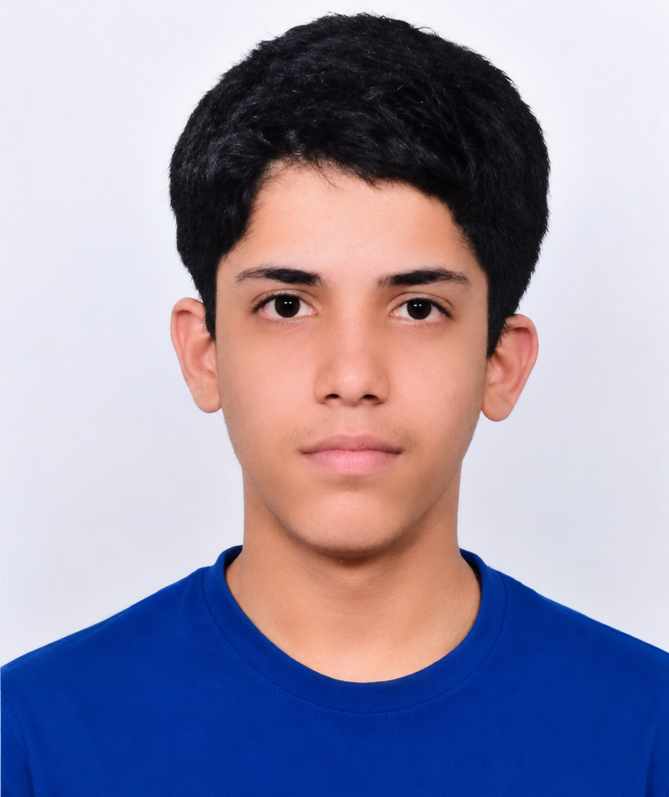

B.Tech CSE Student | Aspiring AI/ML Engineer | Machine Learning Enthusiast Download ResumeI'm Haider Ali, a passionate Computer Science and Engineering student with a strong interest in programming, web development, artificial intelligence, and machine learning. I recently completed a Python Internship at Upskill Campus in collaboration with UniConverge Technologies Pvt. Ltd., where I gained hands-on experience in Python programming, debugging, and project development. My technical skills include Python, Java, C Programming, Object-Oriented Programming (OOP), Git, GitHub, and Problem Solving. I enjoy exploring new technologies, building real-world projects, and continuously improving my technical and professional skills. 🚀 Aspiring AI/ML Engineer committed to learning, innovation, and creating impactful technology solutions.
Developed a Machine Learning clustering model to segment customers based on spending patterns and purchasing behaviour.
Built a Computer Vision application for hand gesture recognition using image processing and machine learning techniques.
GitHub: haider7152005
Email: haider7152005@gmail.com
Phone: 7331190478
LinkedIn: My LinkedIn Profile